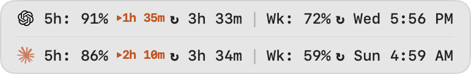

macOS · Open Source · Local-first
Browse, search, inspect, and resume local AI agent sessions — across Codex, Claude, Cursor, Antigravity, Copilot, OpenCode, Pi and more.
Desktop apps and CLI, together.
brew install --cask jazzyalex/agent-sessions/agent-sessions
Desktop apps and CLI tools side by side — surfaced with source-specific labels and clear project context.
Apple Notes-style search across all agents and within a single session. Inline image support and an Image Browser for visual output from Codex, Claude, and OpenCode.
Right-click a supported CLI session to copy the exact resume command, or open it directly in Terminal.app, iTerm2, or Warp.
Manage archived sessions — delete, reveal, and diagnose with archive status tooltips.
Flip cards with sparklines: session trends, agent breakdowns, time-of-day heatmaps.
How fast each session burns your plan — and how much you have left before you run out. Quota Meter reads your Codex and Claude 5-hour and weekly limits as a live burn rate against your own plan, so one glance tells you which sessions eat your quota and how long until reset. Three ways to keep it in view:
The same markers carry into Agent Cockpit, where active and waiting sessions show their runway alongside quick focus jumps.



Saved Sessions with restore actions

Image Browser for visual session outputs

Menu bar status strip

Analytics dashboard filtered to one project

Where each agent keeps its sessions, what Agent Sessions reads, and where the boundaries are.
How CLI, Desktop, and VS Code rollout history is read from ~/.codex/sessions.
Where OpenCode stores session data and how to browse old runs locally.
What Claude Code writes to local transcripts and where the boundary is.
How Cursor Agent transcripts are read from Cursor's local storage.
How Hermes sessions in ~/.hermes/state.db become searchable history.
How OpenClaw JSONL sessions are discovered, searched, and kept separate.